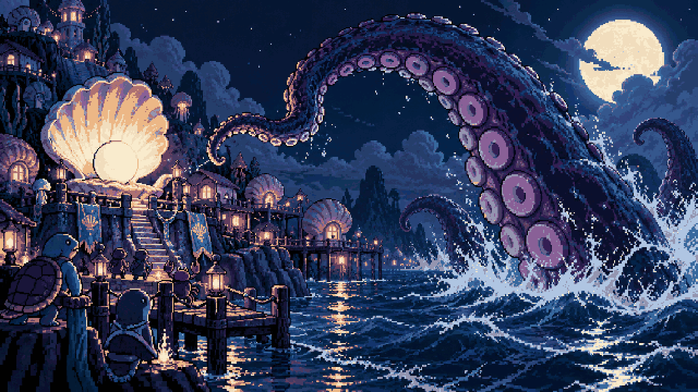
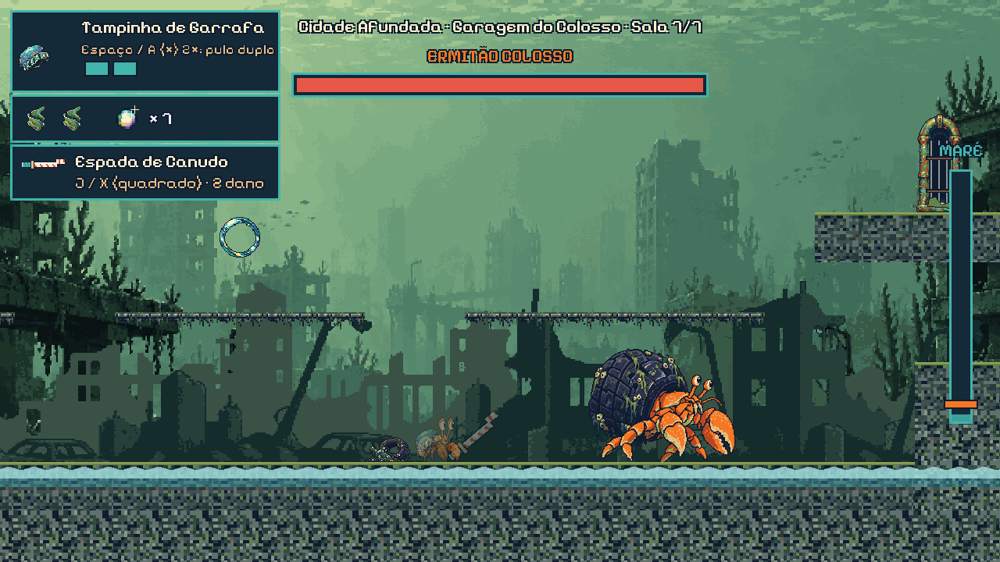
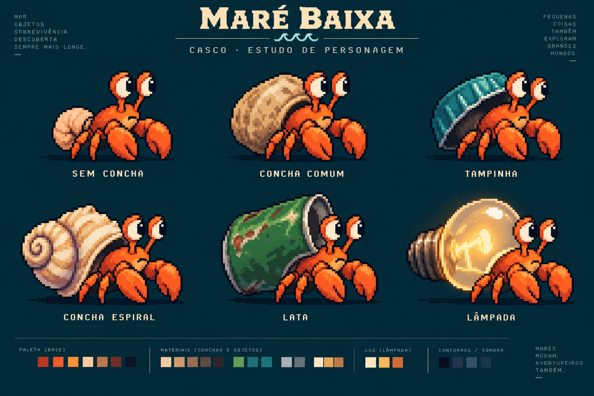
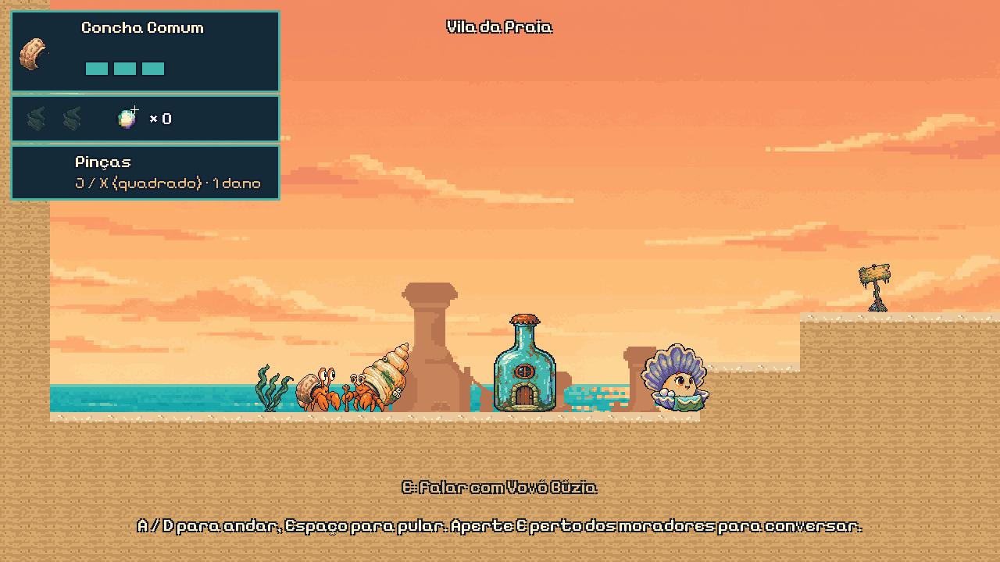
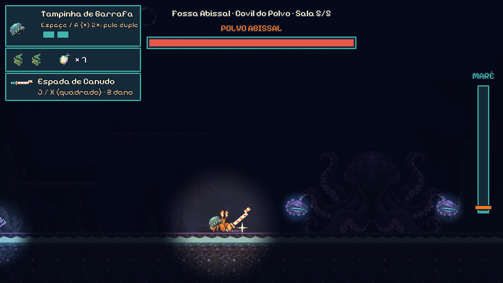
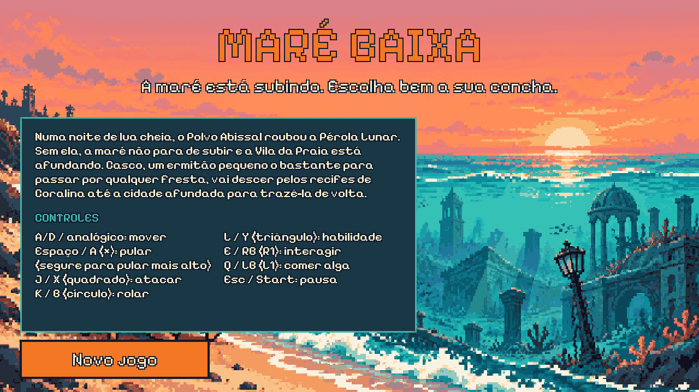
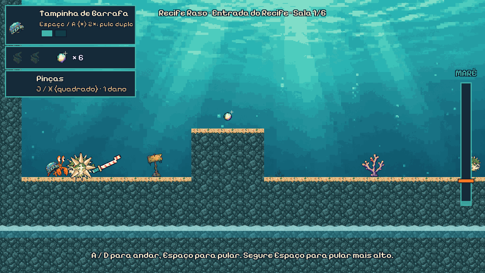
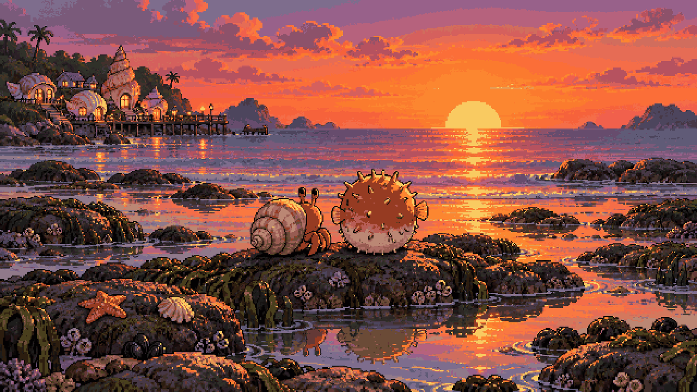
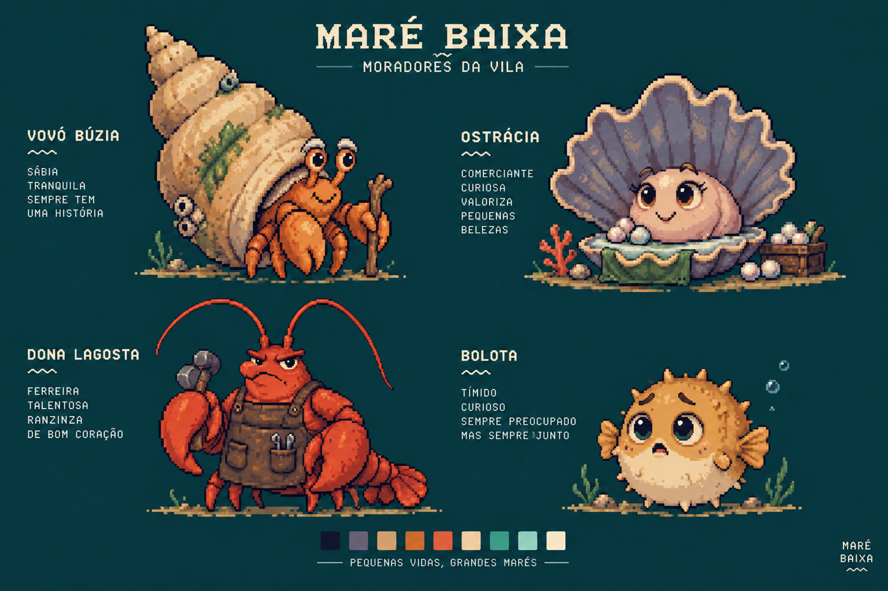

Roguelite de ação 2D com plataforma para PC e navegador. Teclado ou controle (Xbox e PlayStation). Classificação indicativa: a partir de 10 anos.
Coralina, uma cidade humana que afundou há tanto tempo que os animais esqueceram quem a construiu.
Numa noite de lua cheia, o Polvo Abissal roubou a Pérola Lunar, a joia que controla as marés. Sem ela, a água não para de subir, e a Vila da Praia está afundando.
Casco é um caranguejo-ermitão jovem que nunca achou uma concha do tamanho certo. Corajoso, meio desajeitado e pequeno o bastante para passar por qualquer fresta, ele aceita descer pelos recifes, pelas ruas da cidade afundada e pela escuridão da fossa para trazer a pérola de volta.
No caminho, Casco veste o que o mar oferece: conchas, tampinhas, latas e até uma lâmpada velha. O lixo que os humanos deixaram vira casa, armadura e arma.

Descer até o fundo da Fossa Abissal, vencer o Polvo e recuperar a Pérola Lunar.
Jogue no teclado ou conecte um controle por USB ou Bluetooth, antes ou durante o jogo. As legendas na tela se ajustam ao controle reconhecido.
| Ação | Teclado | Xbox | PlayStation |
|---|---|---|---|
| Mover | A D ou setas | analógico esquerdo ou direcional | |
| Pular (segure para pular mais alto) | Espaço ou W | A | × |
| Descer de uma plataforma | ↓ + Espaço | ↓ + A | ↓ + × |
| Atacar com a arma (ou com as pinças) | J | X | □ |
| Rolar dentro da concha (fica invulnerável) | K ou Shift | B | ○ |
| Habilidade da concha | L | Y | △ |
| Pegar arma, vestir concha, conversar, descansar no banco, descer | E | RB | R1 |
| Comer alga (recupera 1 de resistência da concha) | Q | LB | L1 |
| Pausa e mapa da jornada | Esc ou P | Start | Options |
| Pular uma cutscene | segure Esc | segure Start | segure Options |
Use o direcional, o analógico ou as setas para escolher. Enter / A / × confirma e Esc / B / ○ volta. O mesmo botão de confirmar avança os diálogos e os quadros das cutscenes.
Novo jogo começa uma jornada a partir da vila. Continuar do banco retoma a jornada salva no último banco de descanso, com o mesmo roteiro de salas, mesmo depois de fechar o jogo. Na pausa, Menu mantém o banco salvo e Voltar à vila encerra a jornada.
Tudo o que decide a sua sobrevivência fica sempre visível.

Casco veste uma concha por vez. Ela é a armadura e define o jeito de jogar.

| Concha | Resistência | Velocidade | Habilidade (L / Y / △) |
|---|---|---|---|
| Sem concha | 0 | rápido | nenhuma; um golpe mata |
| Concha Comum | 3 | normal | nenhuma; a concha inicial |
| Tampinha de Garrafa | 2 | rápida | pulo duplo |
| Concha Espiral | 4 | normal | cambalhota que avança girando e dá 3 de dano dos dois lados |
| Lata de Refrigerante | 6 | lenta | investida que derruba e atordoa inimigos |
| Lâmpada Velha | 3 | normal | clarão que atordoa e ilumina salas escuras |
Para trocar, encoste numa concha no chão e aperte E. A antiga fica para trás com a resistência que tinha. Uma alga (Q) recupera 1 ponto de resistência.
Lixo humano encontrado no fundo do mar. Casco começa com as pinças.
| Arma | Dano | Estilo | Onde achar | Preço na forja |
|---|---|---|---|---|
| Pinças | 1 | curtas e rápidas | Casco já tem | grátis |
| Espada de Canudo | 2 | corte rápido | entrada do Recife Raso | 5 pérolas |
| Lança de Garfo | 2 | alcance longo | entrada da Cidade Afundada | 9 pérolas |
| Martelo de Escova | 3 | lento, atordoa | entrada da Fossa Abissal | 12 pérolas |
Aperte E perto da arma para pegá-la; a anterior fica no chão. Armas compradas na forja viram opção de arma inicial para sempre.
Quatro sistemas que obrigam a escolher entre explorar e avançar.
Em cada sala a água sobe sem parar: devagar no Recife, mais rápido na Cidade e muito rápido na Fossa. Algumas salas têm válvulas: atacar uma baixa a água por alguns segundos, mas o barulho atrai inimigos. Correntezas empurram Casco.
Com a cabeça submersa, a barra de ar (8 segundos no início) esvazia. As bolhas espalhadas pelas salas recarregam o ar.
Inimigos e baús deixam pérolas, que voam até Casco quando ele chega perto. Elas compram melhorias e conchas na vila.
Entre as zonas há uma sala segura: a água não sobe e a fonte de cura restaura a concha uma vez.
O ponto de partida de toda jornada. Aperte E perto de um morador para conversar.

Vovó Búzia conta a história na primeira visita e depois dá uma dica nova a cada conversa.
Ostrácia troca pérolas por melhorias permanentes.
Dona Lagosta forja conchas, vende armas e define o equipamento inicial.
Bolota, o baiacu filhote, faz piada e torce por Casco.
| Loja da Ostrácia | Efeito | Preço |
|---|---|---|
| Pulmão de Peixe (3 níveis) | +2 s de ar por nível | 3 · 5 · 8 pérolas |
| Casca Grossa | aguenta 1 golpe sem concha | 6 pérolas |
| Alga na Bolsa (2 níveis) | +1 alga no início da jornada | 4 · 7 pérolas |
| Forja da Dona Lagosta | Preço para forjar | Condição |
|---|---|---|
| Tampinha de Garrafa · Concha Espiral | 6 · 8 pérolas | sempre disponíveis |
| Lata de Refrigerante · Lâmpada Velha | 14 · 16 pérolas | achar uma na jornada antes |
Depois de forjada, a concha vira opção de concha inicial. Trocar de concha ou arma inicial na forja é grátis.
Cada inimigo ensina uma resposta diferente: esquivar, recuar, punir ou usar a habilidade da concha.
| Inimigo | Zona | O que faz | Como vencer |
|---|---|---|---|
| Água-viva Errante | Recife | flutua e dá choques periódicos | atacar entre um choque e outro |
| Baiacu Nervoso | Recife | incha ao apanhar e explode em espinhos | bater uma vez e recuar |
| Moreia de Cano | Cidade | se esconde no cano e dá um bote | esquivar do bote e atacar na volta |
| Siri Saqueador | Cidade | agarra Casco e rouba a concha | bater nele para recuperar a concha |
| Peixe-pescador | Fossa | uma isca luminosa atrai Casco para a boca | clarão da Lâmpada ou atacar de lado |
| Tentáculo Sombrio | Fossa | sai do chão e varre a área | ver o aviso no chão e pular ou rolar |
Recife Raso corais e luz do sol, maré lenta: o lugar para aprender. Cidade Afundada ruas, carros e prédios inundados, maré média. Fossa Abissal escuridão quase total, maré rápida; só as criaturas e a luz das conchas brilham.
Um ermitão gigante que usa um pneu como concha, no fim da Cidade Afundada. Ele rola pela arena como uma roda. Quando bate na parede, fica tonto: é a hora de atacar.
Fase 1: tentáculos saem do chão em sequência, com aviso.
Fase 2: ele jorra tinta e a tela escurece.
Fase 3: a água da arena sobe rápido; suba nas plataformas e ataque os olhos.

Morrer faz parte. Cada derrota deixa a próxima tentativa um pouco mais fácil.
Há seis abrigos na jornada: entre trechos do Recife e da Cidade, entre as zonas e antes de cada chefe. Aperte E junto ao banco: Casco deita, recupera a concha, o ar e as algas, e o jogo guarda as pérolas, o equipamento e o roteiro das salas. Sem concha, ele recebe uma Concha Comum.
Quatro histórias em quadrinhos contam a aventura: A Pérola Roubada (início), A Primeira Concha (ao vestir uma concha nova), O Fundo do Mar (ao entrar na Fossa) e Maré Baixa (vitória). Todas podem ser puladas segurando Esc ou Start.
Três momentos que resumem a jornada de Casco.



Como jogar e quem fez.
O progresso (pérolas, melhorias e o último banco) é salvo automaticamente.
| Integrante | RA |
|---|---|
| Edson Pedreira de Oliveira Júnior | 22.123.038-6 |
| Henrique Bassan Rebechi | 22.223.083-1 |
| Matheo Campanelli de Aquino Esteves | 22.123.045-1 |
Unity 6.3 LTS com o Input System para teclado e controle. Salas desenhadas em texto e sorteadas a cada jornada, interface construída por código, pixel art própria, música e efeitos sonoros sintetizados no jogo. Fonte Pixelify Sans (SIL Open Font License).
Em Maré Baixa, os humanos não aparecem, só o que deixaram para trás. Canudos, garfos, latas e tampinhas viram casa e arma para os animais do fundo do mar. O jogo usa o humor para falar de poluição sem ser chato.
